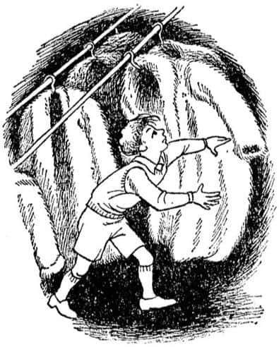
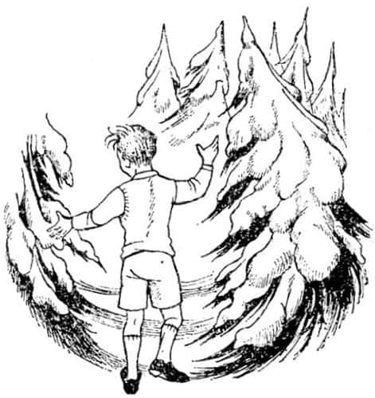
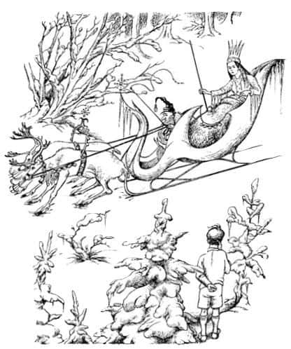

Edmund ve Dolap
Lucy boş odadan dışarıya koştu ve diğer üçünü buldu.
“İyiyim” diye tekrarladı, “geri döndüm.”
“Lucy sen neden bahsediyorsun?” diye sordu Susan.
“Ne?” dedi Lucy şaşkınlıkla, “Nerede olduğumu merak etmediniz mi?”
“Saklanıyor muydun?” dedi Peter. “Zavallı Lu, saklanmış ama kimse fark etmedi! Eğer insanların seni aramaya başlamasını istiyorsan bundan daha uzun süre saklanmalısın.”
“Fakat ben saatlerdir buradan uzaktaydım” dedi Lucy.
Diğerleri birbirlerine baktılar.
“Çatlak!” dedi Edmund elini başına vurarak. “Bayağı çatlak.”
“Ne demek istiyorsun Lu?” diye sordu Peter.
“Söylediğim şeyi” diye cevapladı Lucy. “Hemen kahvaltıdan sonra dolaba girmiştim ve saatlerdir uzaklardaydım, çay içtim, bir sürü şey oldu.”
“Saçmalama Lucy” dedi Susan. “Biz bu odadan az önce dışarı çıktık ve sen oradaydın o sırada.”
“Hiç de saçmalamıyor” dedi Peter, “yalnızca eğlenmek için hikâye uyduruyor, değil mi Lu? Ayrıca, neden olmasın?”
“Hayır Peter, uydurmuyorum” dedi Lucy. “O – o dolap büyülü. İçinde bir orman var ve kar yağıyor, bir Faun, bir de Cadı var ve Narnia deniliyor oraya, gelin görün.”
Diğerleri ne düşüneceklerini bilmiyorlardı, fakat Lucy o kadar heyecanlıydı ki hepsi yeniden onunla odaya gittiler. Lucy önlerinden aceleyle yürüdü, dolabın kapısını açtı ve “Şimdi girin ve kendi gözlerinizle görün.” diye bağırdı.
“Seni gidi kaz” dedi Susan, kafasını dolaba sokup paltoları aralayarak, “bu yalnızca sıradan bir dolap; bak dolabın arkası orada.”
Sonra birer birer içeriye bakıp paltoları araladılar ve hepsi de – Lucy de dahil – son derece normal bir dolap gördüler. Ne orman, ne de kar vardı, yalnızca çengel askıların bulunduğu dolabın arkası görülmekteydi. Peter emin olmak için dolaba girdi ve eliyle dolabın arkasına vurdu.
“Çok iyi bir şakaydı Lu” dedi yeniden dışarı çıkarken, “kabul etmeliyim ki bizi aldattın. Neredeyse inanıyorduk sana.”
“Fakat bu, asla bir şaka değildi” dedi Lucy, “gerçekten doğruydu. Az önce her şey değişikti. Sahiden değişikti. Yemin ederim.”
“Yeter Lu” dedi Peter, “biraz fazla ileri gittin. Şakaysa şaka! Yeter artık!”
Lucy’nin yüzü kıpkırmızı kesildi, ne diyeceğini bilmemesine karşın bir şeyler söylemeye çalıştı ve gözyaşlarına boğuldu.
Lucy, takip eden birkaç gün pek mutsuzdu. Eğer her şeyin eğlenmek için uydurduğu bir hikâye olduğunu söyleyebilse, diğerleriyle her an barışabilirdi. Fakat Lucy doğruyu söyleyen bir kızdı; gerçekten haklı olduğunu biliyordu ama kimseyi buna inandıramayacağını düşünüyordu. Yalan söylediğini, hem de saçma bir yalan söylediğini düşünen diğerleri onu çok üzüyordu. Ondan daha büyük olan ikisi, kuşkusuz bunu istemeden yapıyorlardı ancak Edmund, bu olayda olduğu gibi, bazen acımasız olabiliyordu. Lucy ile alay edip, dalga geçerek odalardaki dolaplarda başka yeni ülkeler bulup bulmadığını sorup duruyordu. Durumu daha da ağırlaştıran şey, bu günlerde yaşanacak bir sürü güzel şey olmasıydı. Havalar güzeldi ve çocuklar sabahtan akşama kadar yüzerek, balık tutarak, ağaçlara tırmanarak ve çayırlarda uzanarak vakitlerini dışarıda geçiriyorlardı. Fakat Lucy bütün bunlardan hiç zevk almıyordu. Her şey, bir sonraki yağmurlu güne kadar böylece devam etti.
O günün öğleden sonrasında havanın açmayacağı anlaşıldığında saklambaç oynamaya karar verdiler. Susan ebe olmuştu ve diğerleri saklanmak için dağılır dağılmaz Lucy dolabın bulunduğu odaya gitti. Dolapta saklanmak amacında değildi çünkü bunun yalnızca, diğerlerini yeniden bu sefil olay hakkında konuşmaya iteceğini biliyordu. Fakat dolabın içine bir daha bakmak istiyordu; çünkü artık Narnia ve Faun’un bir rüya olup olmadığını o da merak etmeye başlamıştı. Ev o kadar büyük, karmaşık ve saklanacak yerlerle doluydu ki dolabın içine bir kez baktıktan sonra başka bir yerde saklanmaya zamanı kalacağını düşünüyordu. Fakat dolabı açmak için elini uzatır uzatmaz dışarıdaki koridorda ayak sesleri işitti. O an dolabın içine sıçrayıp kapısını kapatmaktan başka yapabileceği hiçbir şey yoktu. Kapıyı tam olarak kapatmamıştı, çünkü birinin kendini, büyülü olmasa bile, bir dolaba kapatmasının aptallık olacağını biliyordu.

Ayak sesleri Edmund’a aitti ve o, Lucy tam dolabın içine girdiği anda odaya girmiş ve onu görmüştü. Hemen o da dolaba girmeye karar verdi – özellikle iyi saklanacak bir yer olduğunu düşündüğünden değil ama Lucy ile hayali ülke hakkında dalga geçmeye devam etmek istediğinden dolayı. Kapıyı açtı. Her zamanki gibi paltolar asılı duruyordu, naftalin topaklarının kokusunu duyuyor, karanlığı ve sessizliği hissediyordu ancak Lucy’den bir iz yoktu. “Benim, onu yakalamaya gelen Susan olduğumu sanıyor” dedi kendi kendine, “bunun için arkada sessizce duruyor.” İçeriye girdi ve ne kadar aptalca bir şey yaptığını fark etmeden kapıyı kapattı. Sonra karanlıkta el yordamıyla Lucy’yi aramaya başladı. Birkaç saniye içinde onu bulacağını sanmıştı fakat bulamayınca çok şaşırdı. Yeniden kapıyı açıp dolabı biraz aydınlatmaya karar verdi. Fakat kapıyı da bulamadı. Bundan hiç hoşlanmamıştı. Körü körüne her tarafa doğru çılgınca yürümeye başladı; bir yandan da “Lucy! Lu! Neredesin? Burada olduğunu biliyorum” diye bağırıyordu.
Onu kimse cevaplamamıştı ve kendi sesinin de bir tuhaf çıktığını fark etti – dolapta değil de açık havada duyacağınız türden bir sesti bu. Havanın beklemediği bir şekilde soğuk olduğunu hissetti; az sonra da ışığı gördü.
“Oh” dedi Edmund, “kapı kendi kendine açılmış olmalı.” Lucy’yi hepten unutup dolabın açık kapısı sanarak ışığa doğru yürüdü. Ne var ki kendini, boş oda yerine, bir ormanın ortasındaki sık köknar ağaçlarının karanlık gölgesinden, bir açıklığa çıkarken buldu.

Ayaklarının altında kuru ve gevrek karlar vardı. Ağaçların dalları karla kaplıydı. Yukarıda, insanın güzel bir kış sabahı görebileceği türden uçuk mavi bir gökyüzü vardı. Tam karşısındaki ağaç gövdeleri arasından belirgin ve kıpkırmızı bir renkte yeni doğmakta olan güneşi gördü. Sanki bu ülkede yaşayan tek yaratık oymuşçasına her şey tamamen durağandı. Ağaçların arasında ne bir ardıçkuşu ne de bir sincap vardı. Orman her yöne doğru göz alabildiğine uzanmaktaydı. Edmund ürperdi.
Lucy’yi aramakta olduğunu ve asla hayali olmadığı anlaşılan “hayali ülke” hakkında ona ne kadar kötü davrandığını anımsadı. Lucy’nin epeyce yakında olduğunu düşünüyordu; “Lucy! Lucy! Ben de buradayım – ben Edmund” diye bağırdı.
Hiç cevap yoktu.
“Son zamanlarda ona söylediklerimden dolayı bana kızgın” diye düşündü Edmund. Hatalı olduğunu kabullenmekten pek hoşlanmazdı ama bu tuhaf, soğuk ve sessiz yerde yalnız olmaktan da hoşlanmıyordu; yeniden bağırdı.
“Hey Lu! Sana inanmadığım için özür dilerim. Doğru söylediğini şimdi anlıyorum. Lütfen çık dışarı. Barışalım.”
Hâlâ bir cevap yoktu.
“Bütün kızlar gibi” diye söylendi kendi kendine, “bir yerlerde somurtarak oturup bir özrü bile kabul etmeyecek.” Yeniden etrafına bakındı, ormanda uzaklardan gelen zil seslerini duyduğunda neredeyse geri dönmeye karar vermek üzereydi. Gittikçe yaklaşan sesleri dinlemeye başladı ve sonunda iki geyik tarafından çekilen bir kızak göründü.
Geyikler yaklaşık bir midilli büyüklüğündeydiler ve tüyleri öylesine beyazdı ki kar bile onlara oranla daha az beyaz görünmekteydi; çatallı boynuzları altın kaplıydı ve günışığı yansıdığında sanki alevler içindeymiş gibi parlıyorlardı. Koşum takımları kırmızı deriden yapılmıştı ve zillerle bezenmişti. Eğer ayakta olsaydı bir metre boyunda olacak olan şişman bir cüce, geyiklerin sürücüsü olarak kızakta oturmaktaydı. Kutup ayısı kürkünden paltosu ve başında, ucundan uzun, altın bir püskülün sallandığı kırmızı bir külahı vardı; koskocaman sakalı dizlerine dökülmüş, bir battaniye işlevi görüyordu. Cücenin arkasında, kızağın ortasında, daha yüksek bir oturakta çok farklı biri oturmaktaydı – Edmund’un şimdiye kadar gördüğü kadınlardan daha uzun boylu, büyük bir bayan. O da boynuna kadar beyaz kürklerle kaplıydı ve sağ elinde uzun, düzgün, altından bir asa, başında altın bir taç vardı. Yüzü, kıpkırmızı dudakları dışında bembeyazdı – sadece soluk renkli değil, kar ya da kâğıt ya da pudra şekeri gibi bembeyazdı. Bunun dışında çok güzel bir yüzdü; gururlu, soğuk ve ciddiydi.
Zillerin şıngırtısı, cücenin şaklayan kırbacı ve her iki tarafından uçuşan karlarla Edmund’a doğru kayarak gelen kızağın görüntüsü çok harikaydı.
“Dur” dedi kadın ve cüce dizginlere öylesine sert asıldı ki geyikler neredeyse yere oturayazdılar. Sonra kendilerini topladılar ve gemlerini ısırıp soluyarak dikildiler. Buz gibi havada burunlarından çıkan nefesleri duman gibi görünüyordu.

“Sen kimsin?” dedi kadın Edmund’a dikkatle bakarak.
“Ben – ben – adım Edmund” dedi Edmund beceriksizce. Bakışlarını beğenmemişti.
Kadın kaşlarını çattı. “Sen bir Kraliçe’yle böyle mi konuşursun?” diye sordu öncekinden daha da sertçe bakarak.
“Özür dilerim Majesteleri, bilmiyordum” dedi Edmund.
“Narnia Kraliçesi’ni bilmiyorsun ha?” diye bağırdı. “Ha! Bundan sonra bizi daha iyi bileceksin. Şimdi yeniden soruyorum – sen nesin?”
“Lütfen Majesteleri” dedi Edmund, “Ne demek istediğinizi bilmiyorum. Ben bir öğrenciyim – en azından öyleydim – şimdi tatildeyiz.”